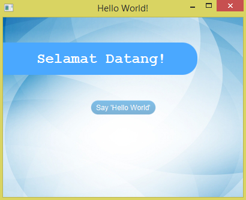
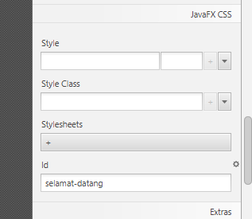
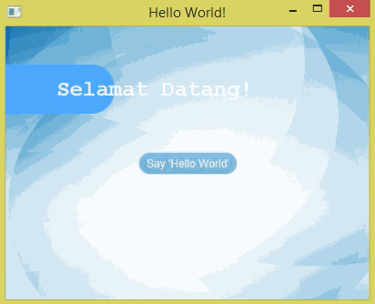
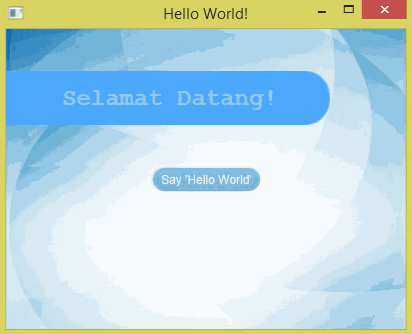
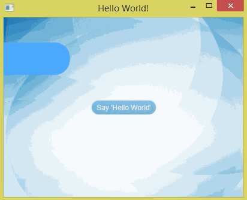

Animation
Animation boleh ditambah pada program JavaFX untuk menjadikan program kita lebih menarik. Semua benda yang ada pada program JavaFX, seperti control, shape, chart dan sebagainya, boleh dianimasikan.
Sebagai demo, kita akan membuat animation pada program yang sama iaitu HelloJavaFX.
Tambahan pada HelloJavaFX
Saya ada menambah beberapa item pada HelloJavaFX sehingga kelihatan seperti ini:

Item yang ditambah ialah Label Selamat Datang! dan Rectangle biru
melengkung di belakangnya.
Jika perasan CSS untuk Label sudah dibuat tetapi Label Selamat Datang!
tidak sama dengan Label yang lain. Untuk membezakan CSS sesebuah
item dengan item yang lain, kita boleh meletakkan ‘id’ pada item
tersebut. Contoh untuk meletakkan id CSS menggunakan Scene Builder:

Selector untuk id bermula dengan hashtag, #, jadi home.css
ditambah dengan CSS berikut:
#selamat-datang {
-fx-font-size: 24;
-fx-text-fill: white;
-fx-font-family: monospace;
}
Sekarang kita akan menggunakan dua item ini, iaitu Label Selamat
Datang! dan Rectangle biru di belakangnya, untuk membuat animation.
FXML injection
Kita perlu membuat FXML injection untuk Label Selamat Datang dan
Rectangle biru kerana kita akan memanipulasi dua item ini melalui code
Java.
package hellojavafx.view;
import java.net.URL;
import java.util.ResourceBundle;
import javafx.event.ActionEvent;
import javafx.fxml.FXML;
import javafx.fxml.Initializable;
import javafx.scene.control.Label;
import javafx.scene.shape.Rectangle;
public class HomeController
implements Initializable {
@FXML
private Rectangle rect;
@FXML
private Label selamat;
@FXML
private Label label;
/**
* Papar 'Hello World!'. Padam jika dah ada.
*/
@FXML
private void tulisHelloWorld(ActionEvent event) {
if (label.getText().isEmpty()) {
label.setText("Hello World!");
} else {
label.setText("");
}
}
/**
* Initializes the controller class.
*/
@Override
public void initialize(URL url, ResourceBundle rb) {
// TODO
}
}
FXML injection tersebut kemudiannya perlu dihubungkan ke file FXML melalui Scene Builder.
Package javafx.animation
Kita akan menggunakan class dari package javafx.animation untuk
membuat animation. Antara class yang boleh digunakan:
FadeTransition– menukar transparency sesuatu itemTranslateTransition– menggerakkan item ke kiri/kanan/atas/bawah/depan/belakangRotateTransition– membuatkan item berputarScaleTransition– mengubah saiz itemPathTransition– menggerakkan item mengikut path yang lebih kompleksSequentialTransition– melaksanakan beberapa animation mengikut giliranParallelTransition– melaksanakan beberapa animation secara serentak
Untuk maklumat lebih lanjut, boleh lihat API Java untuk package
javafx.animation.
Klik untuk lihat package 'javafx.animation'
Sebagai demo, kita akan membuat animation untuk memasukkan Rectangle dari kiri ke kanan, kemudian timbulkan perkataan Selamat Datang.
TranslateTransition
Kita akan menggunakan TranslateTransition untuk menggerakkan Rectangle
dari kiri ke kanan.
...
/**
* Animate 'Selamat Datang!'.
*/
private void animate() {
TranslateTransition rectTranslate = new TranslateTransition(Duration.millis(1500), rect);
rectTranslate.setFromX(-356);
rectTranslate.setToX(0);
rectTranslate.play();
}
/**
* Initializes the controller class.
*/
@Override
public void initialize(URL url, ResourceBundle rb) {
animate();
}
}
Duration.millis() untuk menentukan berapa lama masa yang diambil untuk
melaksanakan animation tersebut. Duration.millis(1500) bermaksud
selama 1500 milliseconds. Method setFromX() menentukan kedudukan
awal, dan method setToX() menentukan kedudukan terakhir. Method
play() untuk menjalankan animation.
Hasilnya:

FadeTransition
Untuk Label Selamat Datang pula, kita akan menggunakan FadeTransition
untuk menukar opacity daripada 0 (transparent) ke 1 (opaque).
...
/**
* Animate 'Selamat Datang!'.
*/
private void animate() {
// TranslateTransition rectTranslate = new TranslateTransition(Duration.millis(1500), rect);
// rectTranslate.setFromX(-356);
// rectTranslate.setToX(0);
FadeTransition selamatFade = new FadeTransition(Duration.millis(1500), selamat);
selamatFade.setFromValue(0);
selamatFade.setToValue(1);
selamatFade.play();
}
...
Saya comment animation sebelum FadeTransition supaya animation tersebut tidak akan dijalankan. Jika tidak, kedua-dua animation tersebut akan jalan serentak.
Method setFromValue() untuk menentukan opacity awal, dan method
setToValue() untuk opacity akhir.
Hasilnya:

=== SequentialTransition
Sekarang kita akan menggabungkan kedua-dua animation tersebut
dengan menggunakan SequentialTransition.
...
/**
* Animate 'Selamat Datang!'.
*/
private void animate() {
TranslateTransition rectTranslate = new TranslateTransition(Duration.millis(1500), rect);
rectTranslate.setFromX(-356);
rectTranslate.setToX(0);
FadeTransition selamatFade = new FadeTransition(Duration.millis(1500), selamat);
selamatFade.setFromValue(0);
selamatFade.setToValue(1);
SequentialTransition st = new SequentialTransition(rectTranslate, selamatFade);
st.play();
}
...
Hasilnya:
